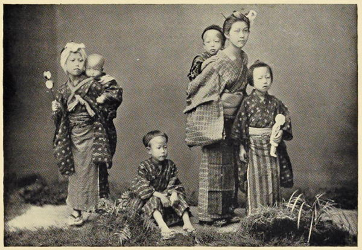

“A family group”
Japan: Described and Illustrated by the Japanese (1897)
A typical household living at the corner of my street in Tokio will serve as an example of normal family life as it is lived every day in Japan. I know them well, having had exceptional opportunities to observe their intimate relationships from the inside outwards. The man is just an average man, neither better nor worse than his neighbours, fairly well-to-do, moderately intelligent. The wife is gentle, modest, retiring, skilled in household management. And there are several babies—two of them sons—so that all is as it should be. Every morning the husband goes off to an office where he remains all day, while his little wife sits at home waiting upon his aged and exacting parents, one or both of whom always want some thing done for them or brought to them. At the hour when her lord is graciously pleased to return she goes to the outer gate and welcomes him with great ceremony and many bows. Do you suppose he troubles to return these pretty salutations? Not at all. He simply gives an inattentive grunt—though he is really quite a considerate man and not at all an ogre as Japanese husbands go—and hurries into the house to change the uncomfortable foreign clothes he is obliged to wear during office hours for his loose kimono. His lady wife hovers around him meanwhile, folds his frock coat and lays it away, brings his obi (girdle), puts his pipe and the hibachi (firebox) at his elbow, brews fresh tea for him and tells him exactly those things he would like to hear—and those only. Not a word about the petty tyrannies of the mother-in-law or the impertinences of the cook. A highly-strung brain like his—a brain valued by his employers at exactly thirty yen per month—must be kept free from the strain of domestic surroundings, must be made to forget that there are such things in life as cooks or other similar irritations. She brings in the children to amuse him if he is in a good humour, and for an hour he will spoil and pet them and stuff indigestible cakes into their hands. But of her he will take no notice, however well she may have ministered to his comfort. Men who are manly should not show affection to possessions like wives, is his theory. It is a sign of weakness; besides, it is a great deal of trouble, and if you train them properly from the very first they do not expect it. A wife, after all, from his point of view, is his property—sa chose, as the French say—something a little better than an upper servant, a little dearer than a second cousin twice removed—a person who walks behind him along the street or into a public dining-room, who carries his parcels, and when he has a friend in to play “go” (chess) slips in and out of the room unnoticed by either host or guest. As a gentleman he treats her kindly, but as a man he avoids confessing his moral weakness by making love to her. Families in Japan are not the place for affectionate frivolities.
Behind the Screens (1910)
It is easy to study the domestic economy of a Japanese household. Every thing is done in open day: cooking, eating, and sleeping. Even making the toilet scarcely requires the interposition of a screen. The dwelling, as well as the workshop and the merchant’s stall, stands open to the street from early morning till late at night; and only a paper screen stretched upon a wooden frame may interpose between the sleeping-chamber and the sidewalk.
The rice or millet, and the sweet potato, if the family can afford such a luxury, is steamed over a movable stone oven containing a few burning coals. When the meal is ready it is placed in little trays, or on mats on the floor, or on a platform raised perhaps a foot above the ground, and the family squat round it, there being no such thing as chair or table in the house. The rice is ladled out in little bowls and distributed; and finds its way by means of deftly handled chopsticks, into hungry mouths, and is washed down with tea prepared by pouring hot water upon a few leaves in a tiny pot. The meal over, the dishes are removed, and the women bring out their work, spinning, knitting, and the like, while the men betake themselves to the streets or fields, or possibly transform the portion of the house next the sidewalk into a shop for the sale of some kind of merchandise.
In the heat of the day the occupants often stretch themselves upon the floor for a siesta, still in full view of the street, and at night mats or cushions are brought in and serve as beds. The screens are drawn and secured by wooden pegs, and the family is at rest. In the morning the beds are rolled up and stowed away, and the business of the day begins.
From Japan to Granada (1889)
The Japanese women do not have clubs, and therefore they have babies. By natural logic, a woman does not have time for both. No false prudery has debased natural law among these simple people. They speak readily and easily of coming events which are dear to their hearts. If life is empty, they always live in hope. “Me no tink mooch trouble, my wife no mind care, she varee mooch hope leetle baby sometime,” is the general sentiment in Japan. Maternal love has not been killed by outside duties. Every woman’s heart is open to her share of babyhood, and every wife is disappointed if the baby does not appear. Her baby goes everywhere that she goes, whether it be to the temple or to the theatre, to the market or to the store. She attends no meetings where the baby would be a nuisance. A father works in the field with the baby strapped on his back. Old and young are indulgent to the newest baby, and there is often a long line. Very young sisters bear the burden on the back, and never question the propriety, nor expect anything else, and the last baby is carried long after he is well able to walk.
A Woman Alone in the Heart of Japan (1906)
I went one evening to call on the family in the first story, and sat on the floor to have a cup of tea with them. The tea was very hot, but the mother took a large fan to cool it. I told them how old I was, and the ages of father, mother, grandfather and grandmother, and they told their ages. All this is etiquette. The old women especially esteem it a great compliment to be asked their age.
The Sunrise Kingdom (1879)
When a Japanese reaches the age of sixty, he, or she, will very often retire from the responsibilities of the family and household to spend the rest of his, or her, life in dignified and not unprofitable leisure. This is known as inkyo.
The headship of a family in Japan, or even of a household (the two are by no means identical in this country), is often a very onerous position. It involves not only the responsibility for the support of the members and the care of the family property, but also the numerous legal and social formalities which are so worrying to old men. The due registration of marriages and funerals, the proper observances of the numerous anniversaries in honour of the departed, the calls, presents, etc., etc., which Japanese etiquette demands, all require a great amount of time and trouble, and may far better be left in the hands of a younger generation.
So, at sixty, a man retires from all the cares of family business and from all responsibility for social and legal observances. He is now spoken of by the members of his family as inkyosama, or the “retired gentleman,” and moves off with his wife into some small house where he can be free and at his ease. His son takes his place as head of the family, and an allowance is made out of the family income to enable the old people to be free from pecuniary cares.
It is a very beautiful custom, and the nearer I draw to my own sixtieth birthday, the more clearly do I see its beauties.
Every-day Japan (1909)
This bright March morning in Tokio found very few people up to greet their O-ten-to-sama’s rising. The wind was from the north, and fishing-boats were coming down the river to go out on the bay. Some fishermen, standing up to their knees in water, were washing their nets. The To-ri was all quiet and deserted; the busy traffic of the day had not yet begun. In the temples a few devotees lay prostrate before the altars, while over the city at nearly regular intervals fell the deep rich tones of Shi-ba’s bell.
But it made no difference to the sun whether there were many or few to welcome him as he brightened Fu-ji’s snow-crowned head, sent a long path of red light across the water, and shone upon the great city and on the house where our little neighbor O I-ne san lay asleep on her futon in a corner of a dark room. Her bed was made of blue cloth stuffed with cotton. These mattresses the people call futons. Her neck rested on a cushion on top of a wooden pillow.
Just outside of the house, in an open court, an old man was drawing water from a deep well. The water of Tokio is carried by pipes into cisterns or wells from a river near the city. It is tolerably good, but sometimes becomes brackish, from the salt water in the bay, which gets into the pipes. The old man drew the water slowly by means of buckets attached to each end of a long rope which ran over a pulley. Two crows kept flying about his head: these birds in Tokio are the great scavengers, carrying off all the refuse. They are very bold, and will snatch fish from a man’s hand. They build their nests in the trees even by the palace, and look down unrebuked upon the emperor and his court. They have meetings upon the tops of the houses, and caw and clap their wings and twist their heads from side to side, until we look up to see what all the commotion is about. They are not afraid of man, for man never injures them.
Near the well, O Cho (“Miss Butterfly”) stood brushing her teeth. Her toothbrush was a straight stick made soft at one end, and she had a box of tooth-powder. She made a noise as if some one were choking her. Inside the house, O Kin (“Miss Gold”) was opening the wooden slides, which run in grooves cut in the veranda. She began with the farthest one, and ran along, pushing it before her, until it was stopped by the end of the house. Then she started for the second, and disposed of that in the same manner, until all the slides were at one end of the small veranda.
The creaking of the well-rope, the caw-cawing of the crows, the toothbrushing process and the opening of the slides made noise enough to arouse any one, and O I-ne san opened her little almond-shaped eyes to see the sunshine pouring into the house. Then she remembered that she was going to school for the first time that day. O I-ne san was six years old, and it was time for her to begin to go to school.
She got up from her bed and went into the kitchen, which is in the front of the house and is the most completely furnished part. Beside the range are large kettles for rice and hot water. There are immense earthen jars for cold water, and wooden buckets, dippers and ladles. Where the earthen jars are kept the floor slants, so that the water is easily carried off into drains. Here, also, is usually found the shallow copper basin which serves as a wash-bowl for the whole family. On shelves are platters and bottles, and hanging on the wall, sieves and a variety of strainers.
When O I-ne san went into the kitchen, O Kin, with her cheeks all puffed out, was kneeling at the range, trying to make the charcoal burn by blowing. O Cho was cutting dai-kon (radishes) on a little table, using a large knife. When she saw O I-ne san she got up to take her some water in a basin, and handed her a toothbrush, with the pink powder. O I-ne san sat down on the veranda and washed her face and hands, wiping them with a little blue towel, and brushed her teeth. Then she slipped off her blue nightdress—Japanese always use blue where we prefer white—and O Cho helped her to dress. There were no buttons to fasten, no hooks and eyes, pins or strings, to render the process of dressing tedious. The loose garments of the Japanese are confined only by the broad belt.
When O I-ne san was ready, she went in to say “O-hay-o” (“Good-morning”) to her father and mother. She found them sitting on the floor in a large room at the side of the house.
The best apartment in Japanese houses is always at the farthest side or the extreme rear, opening into the pretty garden. We have here, as in many other Japanese customs, the reverse of our own style—kitchen in front and parlor in the back. The clean white mats constitute the only furniture of a Japanese parlor. By way of ornament there are pictures in crayon, or long scrolls with poems written on them in Chinese or Japanese character. There are also vases for flowers. No chairs, ornamental tables, mirrors, book-cases, or anything of that sort, can be found in a purely native house.
The futons and pillows are carefully put away in the daytime. There are a great many little closets in these houses; the people have a wonderful way of economizing space, and even make drawers in their steep, narrow staircases. Tables which they use for meals, writing, or any other purpose, are small and only about a foot high from the ground. Some families have chests of drawers, and all possess baskets and boxes of all sizes and shapes.
The charcoal brazier, or hi-ba-chi, is the only stove used by the people. These are made in various shapes, some of them being highly ornamented. They are invariably made of copper. They give more heat than one would suppose; but the Japanese are very dependent upon the sunshine for warmth, and throw open their houses to admit it even in midwinter. It is only on damp, cloudy days that the people really suffer from the cold.
Were the houses like ours, these open charcoal fires would be dangerous, but the free ventilation here renders suffocation almost impossible. As it is, however, the constant inhalation of charcoal-fumes cannot be otherwise than injurious.
Even the paper slides were open in the sitting-room of the Ka-ji-ma family this morning, and the light and air poured through the house. On the veranda hung pieces of glass, which tinkled pleasantly as the wind swayed them to and fro. O I-ne san calls her father and mother O Tot san and O Ka san. I-ne means “young rice.” It is a pretty name for a little girl, for young rice is something very tender and precious, and requires great care in its culture. O means “honorable,” and san, “miss,” so this little girl’s name all signifies “Honorable Miss Young Rice.” And this is no unusual designation. It is in accordance with the common habit of the land to give such.
O Cho and O Kin brought in the breakfast. O Cho carried the little tables—one for each of them—and tiny china cups and plates. On these tables they placed chopsticks, and blue bowls for the rice. O Kin brought the large wooden rice-box and the tea-pot. On a platter there were fish, cooked in the Japanese sauce, sho-yu, and some of the radish. O Kin helped to the rice with a wooden spoon, and poured tea into the little tea-cups. Then O Tot san and O Ka san and O I-ne san took their chopsticks in the right hand and pushed the rice into their mouths, eating as fast as they could swallow, washing down the food with cups of hot strong tea. The radish and the fish they also took up with their chopsticks. The radish had been cut into little pieces in the kitchen, and the fish was soft, so no knives were needed.
When the breakfast was over, O Cho and O Kin tied up their heads in kerchiefs. O Kin took a straight stick with long strips of paper at the end for a dusting-brush, and slapped away at the slides inside the house. O Cho carried away the breakfast-things, then got a broom to sweep the mats. Housekeeping in Japan is an easy matter compared to the care of our larger houses, filled with so much furniture, but perhaps it would be better for the women if they had more duties to employ their time.
It was now nearly nine o’clock. O Tot san went away to his business, and O Ka san and O I-ne san started for the school. O Cho walked a little way behind them, carrying some paper and the ink-box, which contains the camel-hair brushes and the India-ink. The school-house was just around the corner. Long before they reached it they heard the sound of children’s voices as they all read together. The noise in a Japanese school is deafening to us, but they do not seem to mind it. The black so-shi were hanging up before the door, where the children had put them to dry. These are their copy-books, originally of white paper, but written over so often that they become perfectly black.
O Ka san called out at the door, “O-go-menna-sai!” (“Beg pardon!”) The schoolmaster opened the sliding door to admit his patron, and the noise suddenly ceased. O Ka san and O I-ne san made the usual courtesy, getting down upon their knees and touching the floor with their hands and foreheads. Their limbs are flexible, and from the power of habit they do this with perfect ease and grace.
O Cho went down in the same prostrate manner a little way behind them. O Ka san told the teacher that her little daughter was six years old; that she was very backward and had a very bad memory, but she wanted her to come to school. The teacher said, “I shall be very happy.” Then O Ka san took the money, which was nicely folded up in a piece of paper, from O Cho, and gave it to the teacher. This was a private school, and the charge for tuition was only a few cents per month, paid in advance.
O Ka san then went back to the house, leaving O I-ne san with O Cho at the school. The scholars who were learning to write sat around the teacher with their copy-books on the floor. They held their brushes straight up in their hand and made long broad marks. O Cho untied the bundles she had, and gave O I-ne san some paper and her pen-brush. Then she got some water and poured it on the ink-stone, and rubbed the stick of India-ink in it.
The teacher sat by O I-ne san’s side and showed her how to hold the pen. The little girl tried hard to copy the strange character given her. She felt lonely and a little frightened when she saw the other children gazing curiously at her. But a little girl whom she knew looked up and smiled at her, then crept to her side and said, “You have well come.”...
In the afternoon, when O Tot san had come home from his business and O I-ne san and O Cho had come from the school, O I-ne san was sitting idly on the floor by O Ka san’s side. The mother was sewing in a way that appeared left-handed to us. The little girl heard voices at the door, and some one spoke out: “O-ta-nomo-shi-ma-su” (“I call”). This practice of calling at the door is owing to the fact that no one can knock at these paper doors. It was a neighbor who had come in to have a little chat, and behind her was a servant with baby Kin-ta-ro on her back. The baby’s hair was all shaved from his head, and his eyelashes and eyebrows plucked out. His eyes were bright and his little brown face clean. He wore a little red crape cap and a long silk dress with wide sleeves. He would have been a funny-looking little man to us, but O I-ne san thought him very pretty. She looked for his hands and feet, and he lay quietly and laughed at her. But soon the neighbor said it was late, and went away, after they had all drank tea and had ku-wa-shi (“sweetmeats”). Then the house was shut up for the night, and O Cho brought in the lamps.
These lamps (an-don) are quite high, with a drawer in the bottom, where wicks are kept. Over the drawer is a place for the oil-can, and above that still, and protected by paper slides, is the little saucer in which the oil is put and the wick for burning. They are rather cumbrous, and not handsome. They stand about two feet and a half from the ground, and are about fifteen inches square, all enclosed, with a sliding paper door which may be drawn up or down to increase or to subdue the light at pleasure. Besides these, the Japanese have tall wooden candlesticks with a sharp iron at the top, on which tallow candles are stuck.
The lamp in the sitting-room gave but little light, but the charcoal in the hi-ba-chi was red and glowing, O Ka san having just fanned it. O Cho and O Kin brought in supper, which is the principal meal in a Japanese family. O Cho had made some nice soup of fish, with rice and other things stirred in while it was boiling. After supper the futons were brought out, and O I-ne san was undressed and put on her own little bed. O Ka san covered her with another futon, said, “O-ya-su-mi-ma-sai” (“rest”), and O I-ne san was soon fast asleep.
Now the night has come, and O Tot san is writing at the little low table, occasionally reading aloud, and O Ka san is finishing the little garment she began to-day.
The Sunrise Kingdom (1879)
◀ Compared with ChineseWomen ▶